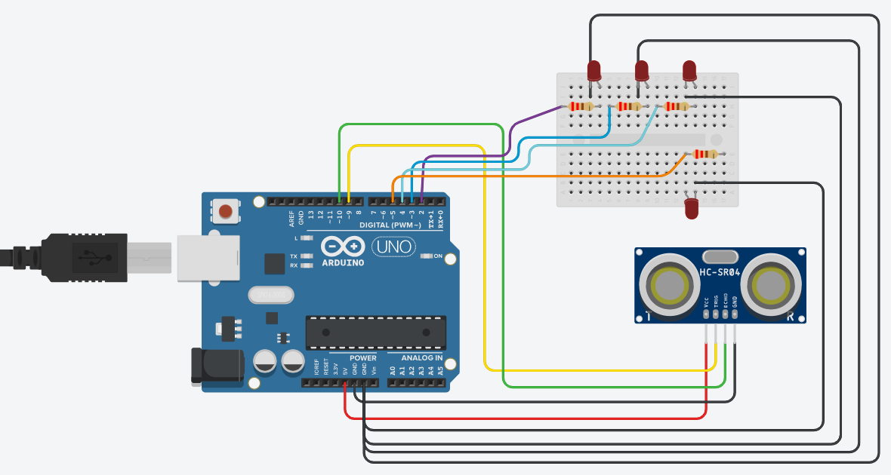

Ultrasonic_Water_Tank_Level_Indicator.ino

Ultrasonic Water Tank Level Indicator

To design and develop an Ultrasonic Water Tank Level Indicator using Arduino UNO, an HC-SR04 ultrasonic sensor and four LEDs.
The experiment measures the distance between the ultrasonic sensor and the water surface, calculates the estimated water level and percentage, and displays different tank-level conditions using LED indicators.
The Ultrasonic Water Tank Level Indicator demonstrates how Arduino UNO can estimate the water level in a tank without directly placing the measurement sensor inside the water.
An HC-SR04 ultrasonic sensor is installed above the water surface, facing downward.
It emits ultrasonic pulses and receives echoes reflected by the water surface.
Arduino measures the echo duration and calculates the distance between the sensor and the water surface.
The original program uses a tank height of 100 cm.
The estimated water level is calculated by subtracting the measured distance from the tank height.
The water level is then converted into a percentage.
Four LEDs indicate increasing water level categories.
When the tank percentage is below 25%, all LEDs remain OFF.
At 25%, LED 1 turns ON.
At 50%, LED 1 and LED 2 remain ON.
At 75%, the first three LEDs turn ON.
At 95% or above, all four LEDs turn ON.
Arduino also prints the measured distance, estimated water level and tank percentage to Serial Monitor at 9600 baud.
The tankHeight variable is set to 100.0 cm in the original Arduino program.
This value assumes that the sensor's measurement origin is approximately 100 cm above the reference tank bottom.
The result represents a height-based percentage, not a direct measurement of water volume.
For tanks with irregular shapes, the height percentage may not equal the volume percentage.
The HC-SR04 should be protected from splashing, condensation and direct water exposure.

Measures echo duration, calculates tank level and controls four LEDs.

Measures the distance from the sensor to the water surface.

Indicate different water-level ranges from low to nearly full.

One resistor limits current through each LED.

Used for organizing the LED and sensor connections.

Connect the sensor, LEDs and breadboard to Arduino UNO.
The original sketch requires no additional Arduino libraries.
It uses standard functions such as pulseIn(), digitalWrite(), pinMode(), Serial.print() and delay().
The source's LED image filename is LED.png, and it is reused for the four identical LED indicators.
| Sensor Terminal | Arduino Connection | Purpose |
|---|---|---|
| VCC | 5V | Sensor supply |
| GND | GND | Common ground |
| TRIG | D9 | Ultrasonic trigger pulse |
| ECHO | D10 | Echo duration input |
| LED | Positive Connection | Negative Connection |
|---|---|---|
| LED 1 | D2 through 220Ω resistor | GND |
| LED 2 | D3 through 220Ω resistor | GND |
| LED 3 | D4 through 220Ω resistor | GND |
| LED 4 | D5 through 220Ω resistor | GND |
Each LED requires its own separate 220Ω current-limiting resistor.
Connect the LED anode through the resistor to the corresponding digital pin.
Connect all LED cathodes to ground.
Connect the HC-SR04 as specified for a 5 V Arduino UNO circuit.
Position the ultrasonic sensor so its sensing face points toward the water surface.
| Function | Arduino UNO Pin |
|---|---|
| LED 1 | D2 |
| LED 2 | D3 |
| LED 3 | D4 |
| LED 4 | D5 |
| Ultrasonic TRIG | D9 |
| Ultrasonic ECHO | D10 |

The HC-SR04 sends a short ultrasonic sound pulse toward the water surface.
The reflected ultrasonic pulse returns to the sensor receiver.
Arduino measures the ECHO signal duration using pulseIn().
The original sketch calculates distance using the following formula:
Distance (cm) = Echo Duration × 0.034 / 2
0.034 represents the approximate sound speed in centimeters per microsecond.
Dividing by 2 accounts for the outward and return paths of the ultrasonic pulse.
The water level is determined by subtracting the distance from the configured tank height.
Water Level = Tank Height − Distance
The original sketch sets Tank Height = 100 cm.
For example, if the measured distance is 30 cm:
Water Level = 100 − 30 = 70 cm.
The sketch limits the calculated waterLevel variable to values between zero and tankHeight.
If a calculated water level is negative, it is replaced with zero.
If it exceeds tankHeight, it is replaced with tankHeight.
Arduino converts the water level into a percentage by dividing it by the tank height.
Tank Level (%) = (Water Level / Tank Height) × 100
If the water level is 70 cm and the tank height is 100 cm:
Tank Level = 70%.
The original sketch uses five different percentage ranges.
| Tank Level | LED 1 | LED 2 | LED 3 | LED 4 |
|---|---|---|---|---|
| Below 25% | OFF | OFF | OFF | OFF |
| 25% to below 50% | ON | OFF | OFF | OFF |
| 50% to below 75% | ON | ON | OFF | OFF |
| 75% to below 95% | ON | ON | ON | OFF |
| 95% to 100% | ON | ON | ON | ON |
Arduino prints the sensor distance, estimated water level and percentage during each measurement cycle.
The serial communication baud rate is 9600.
The original program uses delay(500) after each measurement and LED update.
The actual interval also includes the ultrasonic echo measurement time.
The program calls pulseIn(echoPin, HIGH) without an explicit timeout argument or a check for missing echoes.
pulseIn() returns zero when no pulse is detected. The source then calculates distance as zero, resulting in a reported water level of 100 cm and 100% full.
This is a limitation of the original sketch, which is preserved unchanged. The readings should not be used for safety-critical tank overflow protection.
Arduino Experiment · Code Review
Ultrasonic Water Tank Level Indicator · Select a step to highlight the relevant Arduino code and read its explanation.
Click any step to highlight its matching Arduino statements and understand the logic.
The HC-SR04 measures distance by transmitting ultrasonic pulses and timing the reflected echo.
Arduino uses the pulse duration to calculate distance.
The sensor measures the empty space between the top-mounted sensor and the water surface.
Water Level = Tank Height − Measured Distance.
The formula assumes the sensor is mounted at the intended tank reference height.
The height-based percentage is calculated from the ratio of water level to tank height.
Percentage = Water Level / Tank Height × 100.
The source uses 100 cm for its tank height.
The sketch activates LEDs in stages.
One LED turns ON at 25%, two at 50%, three at 75%, and all four at 95%.
All LEDs remain OFF below 25%.
The original program does not explicitly check whether pulseIn() receives a valid echo.
A zero return can be calculated as zero distance, which the formula interprets as 100% full.
This should be addressed before using the system for real overflow detection.
Try it: Simulate distances of 90 cm, 70 cm, 50 cm, 20 cm and 3 cm. Compare the displayed percentages and LED states with the expected output table.
After uploading the program, Arduino repeatedly reads the ultrasonic sensor and calculates the tank water level.
The Serial Monitor displays the distance, water level in cm and percentage.
| Example Distance | Level | Percentage | LEDs ON |
|---|---|---|---|
| 100 cm | 0 cm | 0% | None |
| 90 cm | 10 cm | 10% | None |
| 75 cm | 25 cm | 25% | LED 1 |
| 50 cm | 50 cm | 50% | LED 1, 2 |
| 25 cm | 75 cm | 75% | LED 1, 2, 3 |
| 5 cm | 95 cm | 95% | LED 1, 2, 3, 4 |
| 0 cm (theoretical) | 100 cm | 100% | All four |
With the water surface 90 cm below the sensor, the calculated water level is 10 cm.
Distance: 90.00 cm | Water Level: 10.00 cm | Tank Level: 10.00%
LED 1: OFF
LED 2: OFF
LED 3: OFF
LED 4: OFF
Distance: 70.00 cm | Water Level: 30.00 cm | Tank Level: 30.00%
LED 1: ON
LED 2: OFF
LED 3: OFF
LED 4: OFF
Distance: 50.00 cm | Water Level: 50.00 cm | Tank Level: 50.00%
LED 1: ON
LED 2: ON
LED 3: OFF
LED 4: OFF
Distance: 20.00 cm | Water Level: 80.00 cm | Tank Level: 80.00%
LED 1: ON
LED 2: ON
LED 3: ON
LED 4: OFF
Distance: 3.00 cm | Water Level: 97.00 cm | Tank Level: 97.00%
LED 1: ON
LED 2: ON
LED 3: ON
LED 4: ON
| Percentage | Expected LEDs ON |
|---|---|
| 24.9% | None |
| 25.0% | LED 1 |
| 49.9% | LED 1 |
| 50.0% | LED 1 and LED 2 |
| 74.9% | LED 1 and LED 2 |
| 75.0% | LED 1, 2 and 3 |
| 94.9% | LED 1, 2 and 3 |
| 95.0% | All four |
When pulseIn() returns zero, the source calculates the following values:
Distance: 0.00 cm | Water Level: 100.00 cm | Tank Level: 100.00%
All four LEDs would turn ON despite the lack of a valid distance measurement.
The example readings assume a 100 cm tank height.
Real HC-SR04 readings may vary due to surface reflections, sensor position and environmental conditions.
At very short distances, the HC-SR04 may not provide reliable measurements.
The program has no dedicated no-echo error indicator.
The four LEDs represent discrete percentage categories, not a continuously varying light bar.
The Ultrasonic Water Tank Level Indicator experiment demonstrates measurement of the distance between an HC-SR04 sensor and a water surface using Arduino UNO.
The program calculates the estimated water level by subtracting the measured distance from a predefined tank height of 100 cm.
The estimated height is converted into a percentage and compared with programmed thresholds.
Four LEDs indicate the corresponding percentage ranges, while the Serial Monitor displays the measured distance, water level and tank percentage.
The experiment demonstrates ultrasonic distance measurement, mathematical conversion, percentage calculation, conditional logic and multiple LED output control.
Before real tank monitoring, the original sketch's missing-echo handling should be improved.